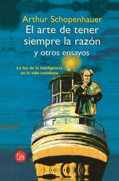
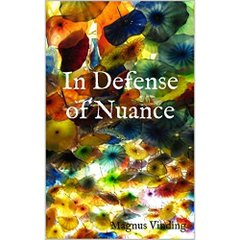
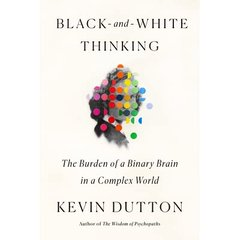

Módulo 03 / Apartado 2 de 5
Las barreras del lenguaje
El encuadre, la pregunta cargada, y las treinta y ocho maneras que dejó escritas Schopenhauer para ganar una discusión sin llevar razón.
Por qué el lenguaje es una barrera y no un vehículo
La guía docente dedica un epígrafe entero a esto y merece la pena entender por qué. Damos por hecho que el lenguaje sirve para transmitir lo que pensamos, y buena parte del tiempo hace lo contrario: decide lo que pensamos antes de que lo pensemos.
El encuadre. «Un 5% de mortalidad» y «un 95% de supervivencia» son el mismo dato y no producen la misma decisión. Ni en pacientes ni en médicos.
La pregunta cargada. «¿Vamos a seguir tirando el dinero en esto?» no admite una respuesta neutral, porque el marco ya viene puesto. Contestar es aceptarlo.
El nombre. Llamar «reestructuración» a un despido o «sinergia» a un recorte no es cosmética: cambia qué preguntas parecen razonables en la reunión siguiente.
Schopenhauer, o cómo ganar sin razón
Y ahora el mejor material que existe sobre esto, que tiene doscientos años y es corto.
Arthur Schopenhauer era un filósofo alemán del siglo XIX, célebre por su pesimismo y por su mal carácter. Entre sus papeles quedó un texto breve que se publicó después de su muerte, la Dialéctica erística, que en español circula como El arte de tener siempre la razón.
Dialéctica es discutir para llegar a la verdad. Erística es discutir para ganar. Schopenhauer separa las dos cosas con toda la intención y se dedica a la segunda.
Su punto de partida es tan cínico que resulta útil: en una discusión real a la gente no le importa la verdad, le importa tener razón. Así que en vez de escribir un manual de lógica, escribió un catálogo de trucos sucios, treinta y ocho, para ganar discusiones tanto si llevas razón como si no.
Y aquí está el motivo por el que este texto vale más que un manual de falacias al uso. Un manual te dice «cuidado con el hombre de paja» y tú asientes y lo olvidas. Un catálogo de trucos escrito desde el lado del atacante se te queda, porque reconoces las jugadas que te han hecho y, si eres honesto, alguna que has hecho tú.

El libro de esto El arte de tener siempre la razónCincuenta páginas, en dominio público y descargable gratis. Cada estratagema ocupa un párrafo y viene con ejemplo. Es el texto más rentable de todo el módulo por relación entre tiempo de lectura y utilidad, y el que Recuenco cita en las dos turras sobre el deseo de tener razón. — Arthur Schopenhauer · publicado en 1864, póstumo
Lo que dice Recuenco de esto
Le dedica dos turras, y su ángulo no es el del manual de retórica. Es el del coste.
Su tesis: tener razón está sobrevalorado frente a resolver el problema. En una discusión de trabajo, ganar el debate y perder la decisión es lo más habitual del mundo, y hay gente muy inteligente que se ha construido una carrera entera de ganar discusiones y no resolver nada.
Y hay un detalle que conecta con el módulo 2: si tu objetivo es que se implante una solución, cada estratagema que uses para ganar el argumento te cuesta capital con la persona que tiene que ejecutarla. Puedes ganar y quedarte sin nadie que te haga el trabajo.
La versión defensiva, que es la que te interesa
Schopenhauer escribió el ataque. La defensa la tienes que montar tú, y son tres movimientos.
«Eso que has dicho no es lo que yo he dicho.» Sin acusar de nada, simplemente devolviendo la afirmación a su tamaño original. La mayoría de las estratagemas dependen de que nadie las señale.
Cuando el tema se ha movido, se dice: «esto es interesante y es otra cosa, ¿volvemos a lo de antes?». El cambio de tema solo funciona si la sala no se da cuenta.
A ti primero, y en voz alta. Si nadie de la sala es capaz de decir qué dato le haría cambiar de postura, entonces no estáis discutiendo, estáis negociando quién manda. Y eso se resuelve de otra manera.
Fuentes de este apartado
Las turras de las que sale
La turra central de este apartado. Va sobre el coste real de ganar discusiones y sobre por qué hay tanta gente lista atascada. Es donde cita a Schopenhauer.
El impacto del deseo de tener razón en múltiples contextosTurra · 44 tweetsEl mismo tema por otro lado: qué hace el deseo de tener razón en política, en familia y en una reunión de trabajo. Las dos turras se complementan y conviene leerlas seguidas.
Mitos y leyendas: la construcción del relato en la era digitalTurra · recienteSobre cómo se fabrica y se sostiene un relato falso, que es la versión colectiva de lo que Schopenhauer describe a escala de dos personas discutiendo.
Los libros
Las treinta y ocho estratagemas, una por párrafo, con ejemplos. Corto, gratuito y de una mala fe deliciosa. Se lee en una tarde y no se olvida.

In Defense of NuanceSobre la polarizaciónEl contrapeso: un ensayo a favor de sostener posiciones matizadas en un entorno que premia lo contrario. Recuenco lo recomienda como el libro que nadie conoce y que hace falta, y encaja aquí porque la mayoría de las estratagemas de Schopenhauer funcionan justamente eliminando el matiz.

Black-And-White ThinkingKevin Dutton · 2020Por qué el cerebro categoriza en blanco y negro y qué cuesta eso. Recuenco lo cita con reservas explícitas: dice que Dutton tiene el «marco Gladwell», que hace mejores libros de éxito que tesis académicas. Aun así lo usa, y avisa.